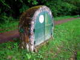
Notre fête du CVCF se tient autant que possible dans tous les coins de France, pour permettre les rencontres même espacées. Villers-lès-Nancy et Est'Air nous ont proposé cette année de nous accueillir, c'est parti... En route, je m'arrête pour déjeuner, et une sorte de gros rocher m'attire. En réalité, c'est une porte de visite de l'aqueduc de la Dhuis, qui part de l'Aisne et fait 131 km vers Paris, en fait surtout vers EuroDisney maintenant. Construit en 1865, son trajet a été transformé en partie en une jolie promenade verte où les salissures et les cavaliers sont interdits pour ne pas polluer l'eau...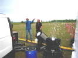
J'arrive vendredi soir, on a rebouché la tranchée qui empêche les accès indésirables, on peut garer tout près du terrain de vol, c'est parfait ! Les organisateurs se livrent aux derniers préparatifs : prise en main du projecteur rotatif et de l'appareil à faire... de la neige qui seront utilisés en vol de nuit !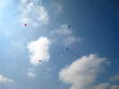
Samedi matin, beau temps. Ma météo prévoit un peu de pluie les après-midi, mais en fait à part quelques menaces et 3 gouttes, il fera beau ! Quelques thermiques viendront perturber un peu les vols, sans plus. Loïk est déjà en l'air avec ses balises, après son voyage à Weifang en Chine... Il a très envie d'y retourner... La Chine est toujours prenante et offre tout, à part le voyage...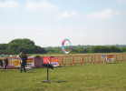
Là-bas, un bol qui, malgré sa minceur tire fort et monte aléatoirement jusqu'à 20 m du sol !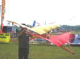
Ce membre du CVCF a réalisé en bois et coton un beau Roloplan, plus costaud que ceux d'origine qui étaient des jouets et utilisaient une mince percale à chemise ou l'équivalent ! Il lui faut un vent un peu plus soutenu que maintenant, mais il volera plus tard...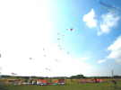
Pendant ce temps, les pilotables ont pris possession de la surface et un Megateam d'ampleur limitée ouvre officiellement le festival !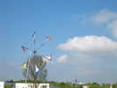
Les bords du terrain sont balisés par ces moulins portugais et gracieux. Avantage, les cannes en alu se démontent par le haut, ce qui permet de démonter facilement pour démêler les lignes des monofils piégés...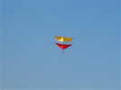
Ca y est, le vent est un peu monté et le Roloplan peut voler, très stable malgré les turbulences thermiques. Il ne restera pas très longtemps en vol quand même, le vent fluctuant ne lui suffisant plus...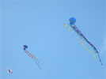
Le vent est un peu plus fort, et les Balises de Loïk emportent maintenant un maximum de queues ! Le Rokkaku de Michel Wirth, à gauche, lui sert en fait à faire de l'aérophoto, à la surprise des autres photographes. C'est pourtant un remarquable CV... quand il est bien réglé. Le seul problème survient par vent très fort où on ne peut l'empêcher de tirebouchonner !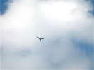
Après quelques modifs/réparations suite à Berck, j'ai remonté ma grue qui se comporte à peu près bien, malgré un louvoiement que j'aimerais plus faible...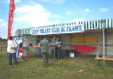
Pour sa fête, le CVCF dispose d'un grand double stand. On a mis en haut le calicot, à l'intérieur l'expo aérophoto apportée par le Président et les panneaux de l'Antenne de Beauce... Jean-Daniel plante ses grandes bannières CVCF Alsace.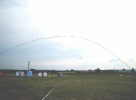
Sous une très grande arche, combat de Rokkakus ! Les participants, pas super-nombreux n'ont pas beaucoup d'expérience et je gagnerai les deux jours...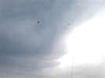
Et puis, je remets ma grue en altitude dans un vent plus régulier !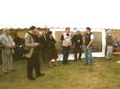
Apéritif municipal, François dira quelques mots au nom du CVCF, en présence des représentants du club Est'Air et des édiles...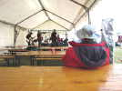
Au soir, en attendant le dîner, le groupe rock-folk ajuste les branchements, les balances, les retours, règle en répétant un peu quand ça marche... Je regarde ça tranquillement...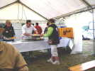
Ca y est les hostilités sont lancées, le menu sera très bon ! A midi aussi, l'organisation annonçait "juste une tranche de jambon offerte". En fait, la tranche fait toute l'assiette sur 1,5 cm d'épaisseur ! Merci à "Marion Salaison" qui n'a pas mégoté...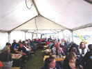
La lumière tombe doucement, le vent aussi. Portant tout le monde reprend des forces après une journée déjà bien remplie !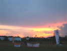
Ca y est, le soleil est couché dans des effets flamboyants, avec encore quelques colonnes de cumulo-nimbus qui s'amollissent progressivement...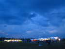
Bon, les stands sont bien éclairés, d'accord, mais pas beaucoup de CVs en l'air ! Je ferai voler d'abord mon Harfang, mais le vent retombe complètement, puis se renforce de plus en plus et je devrai plier...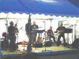
Fin du vol, concert du groupe local, très bon ! La photo souligne que, si les musiciens y voient assez, pour le public, il faudrait prévoir des projos devant !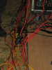
Les cervolistes ont l'habitude d'emmêler les ficelles, mais les musiciens ne font pas mal non plus !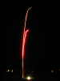
Après le concert bien apprécié, feu d'artifice ! Ce n'est pas Berck, mais il a quand même un volume non négligeable auquel les photos ne rendent pas trop hommage...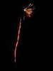
Encore une, mais j'ai raté le bouquet final, qui a eu lieu... au milieu de la prestation !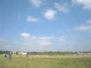
Dimanche matin, beau temps, on en profite...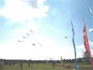
Les monofils volent en dehors de l'aire de démonstration où se produisent des teams, des individuels, des deltas, des Révos et même des démos en dual... Le commentateur commente, pose le micro, exécute ou participe à la démo, et reprend vite le micro pour la suite !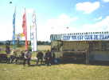
Devant le stand CVCF, un banc et des fauteuils accueillent, comme dans les villages de Provence ou de Corse, les anciens, visiteurs ou membres...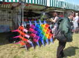
Dans le stand voisin, Marc Devise et Françoise ont exposé leurs marchandises, dont ce beau cellulaire en losanges...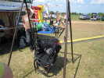
Au bout de la rangée, les parapentistes qui feront des démos et offrent ce simulateur plus que simple pour démystifier leur discipline !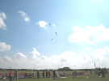
Une des nombreuses démonstrations de team, sous ce beau ciel d'été !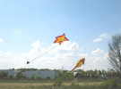
A droite, dans l'un des terrains annexes, des gonflables : une étoile rieuse et un hippocampe de bonnes tailles !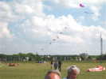
Et, derrière la surface de présentation, un train de carpes décoratif...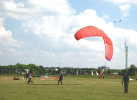
Les parapentistes gonflent leur voile et effectuent des vols ultra-brefs, tirés par 2 collègues costauds et rapides !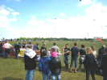
Pas mal de public quand même pour Villers-Lès-Nancy qui ne fait que 16000 habitants !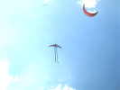
Sous un angle difficile, j'ai pris ce cerf-volant cornu joliment décoré, pendant que les parapentes montrent toujours leurs possibilités !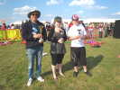
Au soir, petite remise de prix, j'ai gagné les 2 manches du combat de Rokkaku, alors, j'ai la Coupe en or (pas massif, dommage) !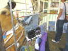
Dans le stand CVCF, on a déplacé la collection de photos pour la rendre plus accessible, et François expose une nacelle de sa fabrication : on règle les angles, et un moteur portant une came appuie sur le déclencheur pour prendre une photo toute les x secondes...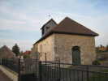
Je prendrai la longue route en fin d'après-midi et passerai la nuit à Haussimont, près de Somessous, sous la protection de cette modeste chapelle, dans un environnement plus que calme : plusieurs maisons, mais je n'ai pas vu âme qui vive jusqu'au matin inclus !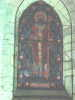
Au soir, malgré sa modestie, la chapelle est illuminée, de l'intérieur et de l'extérieur !